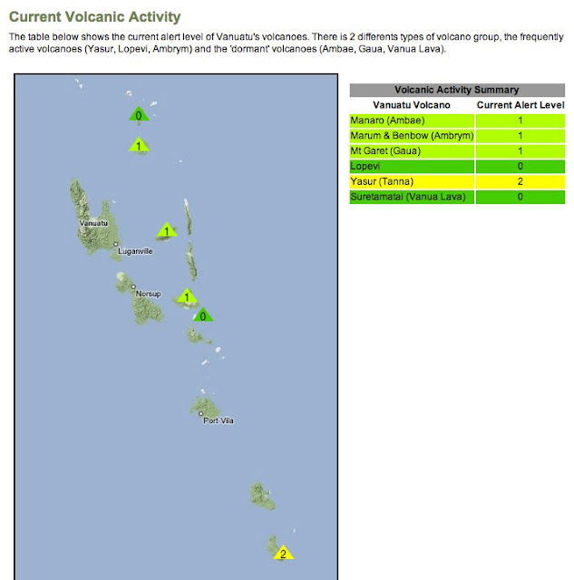
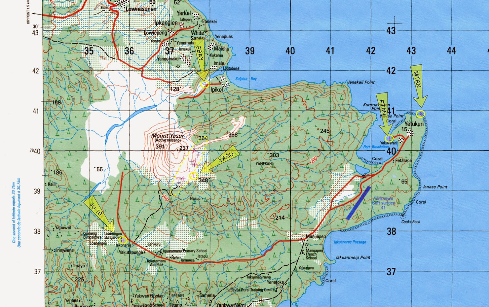

Ça y est, le projet démarre enfin ! Nous avons tous les deux pris un mois sabbatique, nous pouvons maintenant prendre l'avion de ligne demain matin pour rejoindre la Nouvelle-Calédonie, et de là la capitale du Vanuatu et enfin l'île de Tanna. L'objectif : tenter de réaliser une modélisation 3D de la zone de la Caldera de Siwi, pour les volcanologues du LMV.
Cette mission-test nous permettra de valider l'intégralité du concept : à la fois la réalisation de la mission scientifique (pour cette fois-ci uniquement, nous louerons un avion sur place), mais aussi les interactions avec les élèves des écoles qui nous suivent, et enfin la prise d'images pour les films qu'on a prévu de réaliser. Enjeu de taille, donc !
De nombreux problèmes sont encore à résoudre parmi lesquels l'activité actuelle du Volcan, qui nous empêche de nous approcher du dôme... Vous voyez sur la carte ? Le volcan qu'on prévoit de survoler est au niveau 2, le plus actif de la zone !

